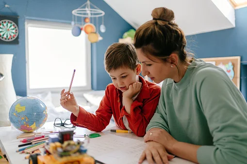
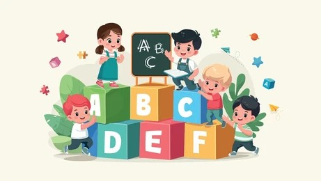
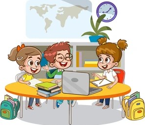

¿Quienes Somos?


Somos una institución educativa comprometida con la formación integral de niñas y niños en etapa primaria. En nuestra escuela fomentamos un ambiente seguro, inclusivo y estimulante, donde cada estudiante es acompañado en su desarrollo académico, emocional y social. Contamos con un equipo docente capacitado y apasionado por la enseñanza, que trabaja cada día para despertar la curiosidad, el pensamiento crítico y los valores humanos en cada uno de nuestros alumnos. Nuestra misión es brindar una educación de calidad que forme personas responsables, solidarias y preparadas para enfrentar los retos del futuro.
¿Por que elegirnos?
Elegir nuestra escuela es apostar por una educación que va más allá del aula. Nos destacamos por ofrecer una enseñanza personalizada, donde cada niño es acompañado de manera individual para desarrollar todo su potencial. Promovemos un ambiente seguro, afectuoso y respetuoso, donde los valores como la empatía, la solidaridad y la responsabilidad están presentes en cada momento del día. Nuestro enfoque educativo combina lo mejor de la tradición pedagógica con herramientas y metodologías innovadoras, integrando la tecnología, el trabajo en proyectos y el aprendizaje significativo. Además, nuestras instalaciones están pensadas para el bienestar y el aprendizaje: contamos con aulas equipadas, biblioteca, espacios verdes y áreas deportivas que invitan al descubrimiento y al juego.
Propuesta Educativa
Aprender a Leer
Acompañamos a los niños en sus primeros pasos en la lectura con actividades lúdicas y estrategias pedagógicas que despiertan su interés por las palabras y los cuentos.
Ejercicios Matematicos
Desarrollamos el pensamiento lógico a través de juegos, desafíos y ejercicios que hacen de las matemáticas una experiencia divertida y comprensible.
Interactuar en Grupo
Fomentamos la cooperación, el respeto y la comunicación mediante dinámicas grupales que fortalecen los vínculos y el trabajo en equipo.
Tareas recreativas
Ofrecemos espacios de juego y expresión donde los niños pueden explorar su creatividad, liberar energía y aprender a través del disfrute.
Ultimas Noticias
- Nuestros Horarios
La institución cuenta con dos turnos de clases para brindar una mejor organización y atención a los estudiantes. El turno mañana funciona de 8:00 a 12:30 horas, con ingreso habilitado a partir de las 7:45 y cierre de puerta a las 8:10. Por su parte, el turno tarde se desarrolla de 13:00 a 17:30 horas, permitiendo el ingreso desde las 12:45 hasta las 13:10. Se solicita a las familias respetar los horarios establecidos para garantizar una jornada ordenada y segura. Ante cualquier inconveniente relacionado con los horarios, pueden comunicarse directamente con la secretaría de la escuela.
- Informacion Protocolar
La escuela cuenta con protocolos actualizados para garantizar el bienestar y la seguridad de todos los alumnos. Se solicita a las familias mantener actualizados los datos de contacto y presentar la libreta sanitaria al inicio del ciclo lectivo. Recordamos que los estudiantes deben asistir con el uniforme correspondiente y cumplir con las normas de convivencia establecidas por la institución. Para más detalles, pueden descargar el reglamento institucional desde la sección de documentos oficiales.